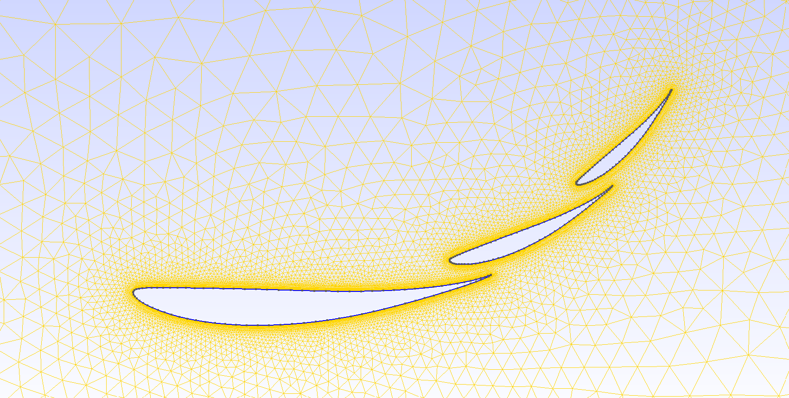

2026–Present
2D Multi-Element Aerofoil Meshing Tool
Building an automated meshing tool for 2D multi-element aerofoil profiles to enable rapid design-space exploration of element spacing and incidence angle. Meshes are output to the text-based XCALibre solver, enabling simplified batch simulations driven by custom user scripts — turning a manual, one-off meshing task into a repeatable sweep.
2D
Multi-element, batch-swept
In dev
Ongoing project